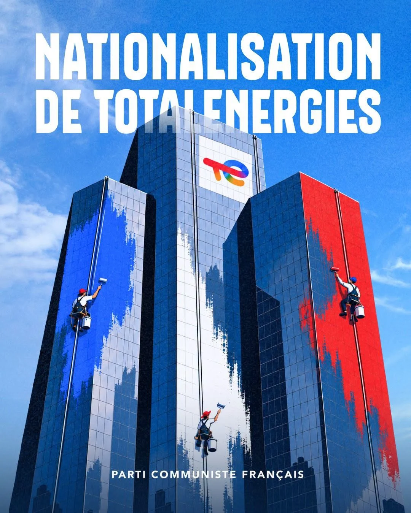

Publication relayée par le PCF 79
Le PCF défend la nationalisation de TotalEnergies et d’Engie
Date de mise à jour indiquée par Facebook · 27 septembre 2026
Texte de la publication · PCF national
🇫🇷 Nationaliser TotalEnergies et Engie aux côtés d’EDF, c’est reprendre le contrôle de notre avenir énergétique : garantir des prix justes, sortir l’énergie de la spéculation, planifier la transition écologique et renforcer notre souveraineté. Cette nationalisation, démocratique et finançable, donnerait davantage de pouvoir aux salariés et permettrait de réorienter les profits vers l’investissement, l’emploi et le service public plutôt que vers les actionnaires.
✍️ Signez la pétition, lien en commentaire.
Repères éditoriaux
Nous avons relayé l’argument du PCF en faveur d’une maîtrise publique de l’énergie, de prix justes et d’un plus grand pouvoir des salariés. Sa publication demandait de nationaliser TotalEnergies et Engie aux côtés d’EDF.

Sources
PCF national · publication relayée par le PCF 79 · fil Facebook et rapport Meta · AR-0002-FB-00678
À lire aussi · « TotalEnergies : assez de profit sur la crise, nationalisation ! »